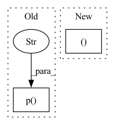

Pattern ID :32887
Before Change
def _forward(self, audio_in: Signal) -> Signal:
noise = self.noise_of_length(audio_in)
return util.crossfade2D(audio_in, noise, self.p("ratio" ) )
def noise_of_length(self, audio_in: Signal) -> Signal:
if self.seed is not None:After Change
noise = torch.empty((self.batch_size, self.buffer_size), device=device)
noise.data.uniform_(-1, 1, generator=mt19937_gen)
else:
noise = torch.rand((self.batch_size, self.buffer_size ), device=device)
noise = noise * 2 - 1
return noise.as_subclass(Signal)
In pattern: SUPERPATTERN
Frequency: 3
Non-data size: 2
Instances Fragment ID: 95420944
Project Name: turian/torchsynth
Commit Name: 68db954a82944813d015fdb6ffa13e2bc1500382
Time: 2021-03-20
Author: jordieshier@gmail.com
File Name: torchsynth/module.py
M Class Name: Noise
N Class Name: Noise
M Method Name: _forward(2)
N Method Name: _forward(2)
M Parent Class: SynthModule
N Parent Class: SynthModule
M File Name: torchsynth/module.py
N File Name: torchsynth/module.py
M Start Line: 535
M End Line: 537
N Start Line: 517
N End Line: 525
Before Change
Creates a batch size number of LFO modulation signals with values [0,1]
rads = 2 * torch.pi * self.p("frequency" ) .unsqueeze(1) / self.sample_rate
freqs = self.range.expand(self.batch_size, -1) * rads + self.phase.unsqueeze(1)
return ((1.0 + torch.cos(freqs)) / 2.0).as_subclass(Signal)
After Change
Creates a batch size number of LFO modulation signals with values [0,1]
arg, _ = self.create_arg()
return ((1.0 + torch.cos(arg)) / 2.0).as_subclass(Signal)
Fragment ID: 95420945
Project Name: turian/torchsynth
Commit Name: 860715905c68aff00a9dfa41bd5624e4b3191847
Time: 2021-03-21
Author: jordieshier@gmail.com
File Name: torchsynth/module.py
M Class Name: SineLFO
N Class Name: SineLFO
M Method Name: _forward(1)
N Method Name: _forward(1)
M Parent Class: AbstractLFO
N Parent Class: SynthModule
M File Name: torchsynth/module.py
N File Name: torchsynth/module.py
M Start Line: 546
M End Line: 547
N Start Line: 566
N End Line: 566
Before Change
def _forward(self) -> T:
// The convention for triggering a note event is that it has
// the same note_on_duration for both ADSRs.
note_on_duration = self.keyboard.p("duration" )
pitch_envelope = self.pitch_adsr.forward(note_on_duration)
amp_envelope = self.amp_adsr.forward(note_on_duration)
vco_1_out = self.vco_1.forward(self.keyboard.p("midi_f0"), pitch_envelope)After Change
def _forward(self) -> T:
// The convention for triggering a note event is that it has
// the same note_on_duration for both ADSRs.
midi_f0, note_on_duration = self.keyboard()
pitch_envelope = self.pitch_adsr.forward(note_on_duration)
amp_envelope = self.amp_adsr.forward(note_on_duration)
Fragment ID: 95420947
Project Name: turian/torchsynth
Commit Name: 9e4f187dc002a4833438c0167ed9f97298d9227a
Time: 2021-03-12
Author: jordieshier@gmail.com
File Name: torchsynth/synth.py
M Class Name: Voice
N Class Name: Voice
M Method Name: _forward(1)
N Method Name: _forward(1)
M Parent Class: AbstractSynth
N Parent Class: AbstractSynth
M File Name: torchsynth/synth.py
N File Name: torchsynth/synth.py
M Start Line: 162
M End Line: 167
N Start Line: 162
N End Line: 167